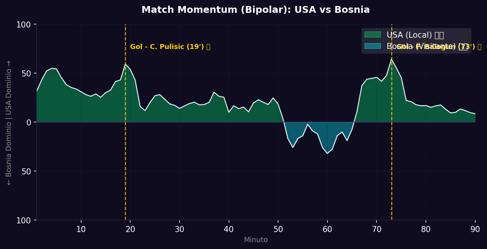
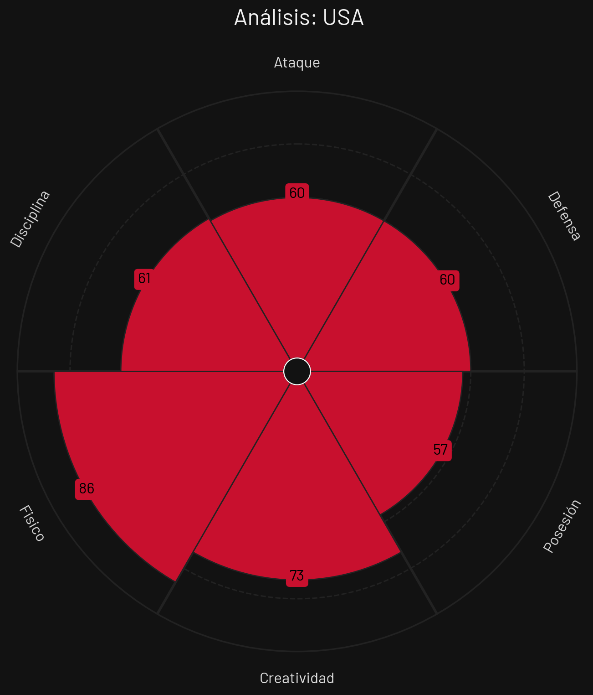
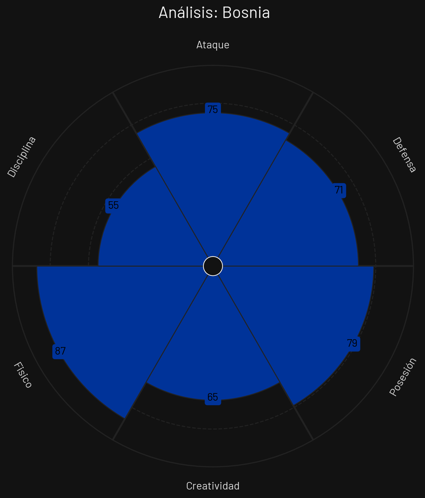

Dieciseisavos
 Bosnia
Bosnia
USA vs Bosnia
📅 2026-07-01 · 🕒 21:00 (Local)
USA

2 - 0
FINALIZADO
Bosnia
📅 2026-07-01 · 🕒 21:00 (Local)
Bosnia
Estados Unidos cumplió con los pronósticos y se metió en los Octavos de Final al derrotar con solvencia por 2-0 a Bosnia y Herzegovina ante un estadio repleto que los empujó de principio a fin. El conjunto norteamericano impuso un ritmo vertiginoso de inicio y abrió el marcador a los 19' gracias a una fantástica jugada colectiva que culminó Christian Pulisic con un disparo cruzado inatrapable.
Tras el gol, Bosnia intentó reaccionar buscando con pelotazos frontales a Edin Džeko, pero la zaga central estadounidense defendió con gran concentración. En el segundo tiempo, USA continuó dominando y sentenció la eliminatoria al minuto 73' cuando Folarin Balogun aprovechó un error en la salida bosnia para definir con sutileza ante el arquero y establecer el 2-0 definitivo.
El gráfico del Match Momentum ilustra un dominio territorial y de intensidad por parte de Estados Unidos durante el 70% del tiempo. Bosnia tuvo breves aproximaciones al inicio de la segunda mitad impulsadas por el juego aéreo, pero sin la profundidad necesaria para incomodar a Turner.
El Match Point (Punto Crítico) del partido ocurrió en el minuto 73' con el gol de Folarin Balogun. Con el marcador 1-0, Bosnia mantenía la esperanza de rescatar un empate de forma heroica. El gol del delantero del Monaco destrozó las aspiraciones bosnias y cerró tácticamente el partido.


